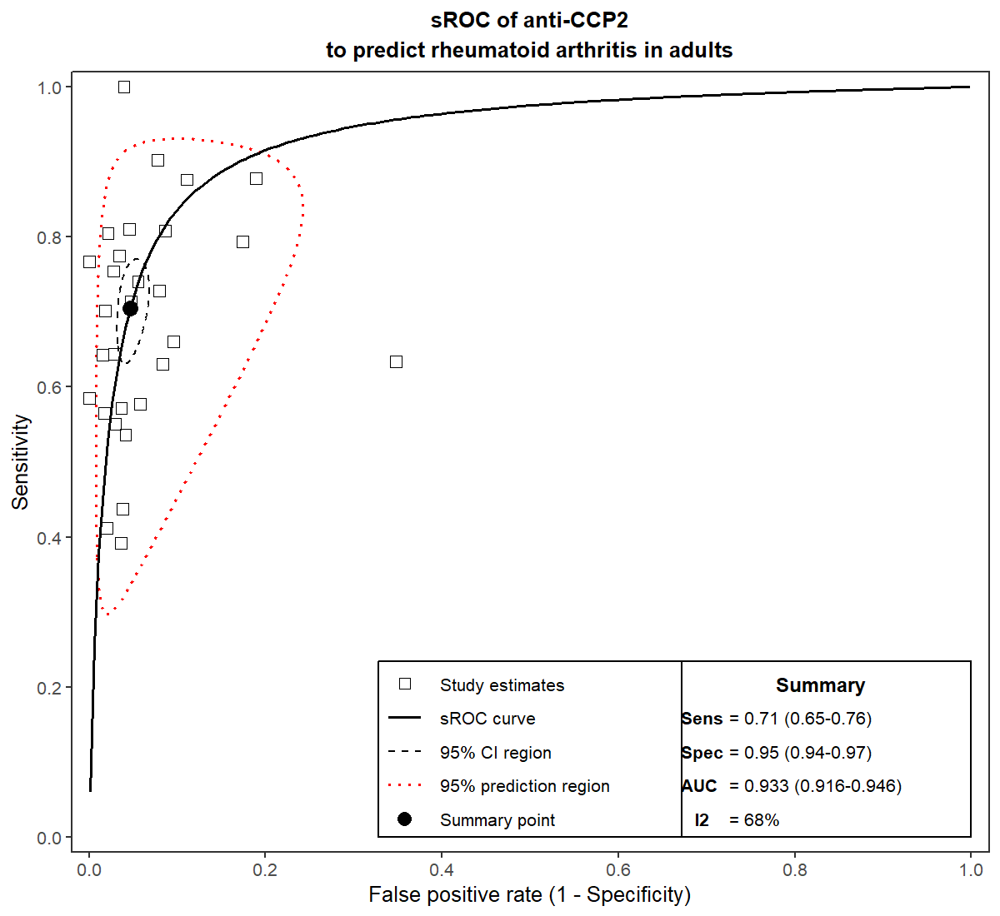
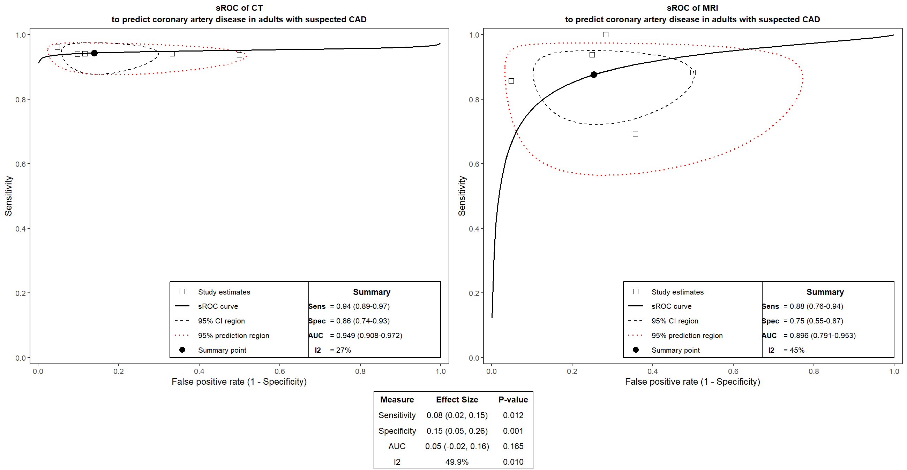

From an Excel sheet to Cochrane-style diagnostic test accuracy plots in four steps
# install once install.packages(c("remotes", "rstudioapi", "readxl")) remotes::install_github("vanioljantunes/easydta") # load every session library(easydta) # attaches ggplot2 too library(rstudioapi) library(readxl)
dta_*()selectFile() opens a file pickerUpdating easydta in an open session? Run
unloadNamespace("easydta") before install_github(),
then library(easydta) again, so the new version is the one in use.
| studlab | TP | FP | FN | TN |
|---|---|---|---|---|
| Aotsuka 2005 | 115 | 17 | 16 | 73 |
| Bombardieri 2004 | 23 | 0 | 7 | 39 |
| Choi 2005 | 236 | 20 | 88 | 231 |
.e index, .c comparator| studlab | TP.e | FP.e | FN.e | TN.e | TP.c | FP.c | FN.c | TN.c |
|---|---|---|---|---|---|---|---|---|
| Dewey 2006 | 62 | 5 | 4 | 46 | 42 | 2 | 7 | 39 |
| Kefer 2005 | 32 | 6 | 2 | 12 | 30 | 9 | 4 | 9 |
studlabone label per study (author and year)
TP, FPtest positive, with / without the target condition
FN, TNtest negative, with / without the target condition
# opens a file picker in RStudio myfile <- selectFile() mwd <- dirname(myfile) # save plots next to it # read every sheet into a list named ma sheet_names <- excel_sheets(myfile) ma <- lapply(sheet_names, function(x) as.data.frame(read_excel(myfile, sheet = x))) names(ma) <- sheet_names # choose the sheet to analyse sheet <- select.list(sheet_names, title = "Which sheet?") d <- ma[[sheet]] # same as ma$CCP2
No file yet? The example workbook ships with the package:
system.file("extdata", "anti_ccp.xlsx", package = "easydta"),
or load the data directly with data(anti_ccp2) and data(schuetz).
# a. bivariate binomial GLMM (Cochrane Appendix 5) fit <- dta_fit_single(d, tp = "TP", fp = "FP", fn = "FN", tn = "TN", studlab = "studlab") print(fit) # Se, Sp, DOR, LR+, LR-, I2 # b. coupled sensitivity / specificity forest dta_forest(fit) # c. SROC with confidence + prediction regions, AUC dta_sroc(fit, test.label = "anti-CCP2", outcome = "rheumatoid arthritis", population = "adults") # d. Deeks funnel + asymmetry test dta_funnel(fit, test.label = "anti-CCP2", outcome = "rheumatoid arthritis", population = "adults") # e. save for the paper png(file.path(mwd, "forest_ccp2.png"), width = 1400, height = 1000, res = 150) dta_forest(fit) dev.off()
dta_funnel() adds continuity = 0.5 to all four cells of that
study before computing ln(DOR); the GLMM fit uses the raw counts.
# paired wide frame: .e = CT, .c = MRI res <- dta_pairwise(schuetz, studlab = "studlab", intervention.label = "CT", control.label = "MRI") print(res) # LR tests + Se/Sp differences dta_sroc_pair(res, outcome = "coronary artery disease", population = "adults with suspected CAD") # per-arm plots: pick the arm by role dta_forest(res, test = intervention) dta_funnel(res, test = control)
.e/.c frame into
dta_pairwise(). Each study did only one test → stack the arms with a
test column and use
dta_compare_tests(rbind(anti_ccp1, anti_ccp2), test_var = "test").
test.label, outcome, populationtest to predict outcome
in population". Same arguments on dta_sroc() and
dta_funnel(); dta_sroc_pair() takes the arm names as labels.test = interventionintervention is the .e arm and
control the .c arm. The arm name (CT, MRI) is looked up for you;
bare word or string both work.variance = "equal""equal" shares the between-study variances across tests
(Cochrane model B, default). "unequal" gives each test its own
(model E).auc_ic = TRUE, B = 2000dta_sroc_pair(). auc_ic = FALSE skips it for a fast preview;
dta_sroc() uses auc_ci.